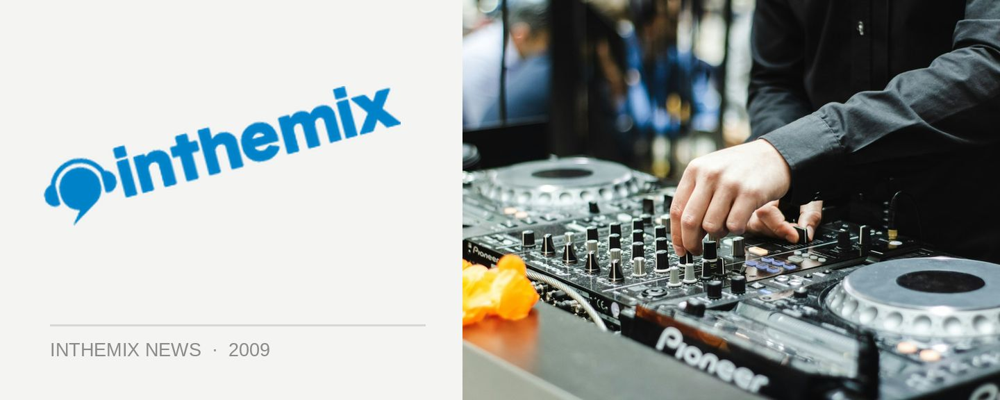

Katalyst hooks up with Steve Spacek for Space Invadas
It’s been a few years since we heard any new music from funk, soul and hip hop guru Katalyst, but he’s back with a brand new project which will see him collaborating with acclaimed UK soul singer Steve Spacek. We’ll be hearing the debut album from Space Invadas called Soul-Fi in early 2010, but for everyone who wants a taste they’ll be playing gigs in Sydney and Melbourne this weekend.
Katalyst first worked with Spacek on How Bout Us, a track on his 2007 album What’s Happening, which was classed by Gilles Peterson as good enough to make it into his top 20 tracks of 2008. The new singles Original and Life have been getting a fair spin on national radio, and with Space Invadas’ debut live shows this week they’ll be performing with a four-piece outfit, as well as support from Danielsan from Koolism.
If you’re after even more Space Invadas, you’ll also be able to catch them performing at the Days Like This! festival in Sydney in January.
Space Invadas shows:
Thurs Nov 19th – Toff in Town, Melbourne
Fri Nov 20th – Melt, Sydney
Sun Jan 10th – Days Like This! festival, Sydney